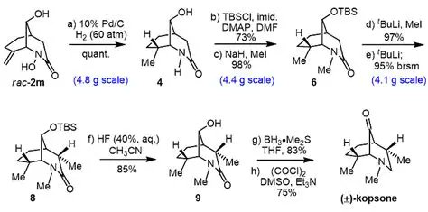
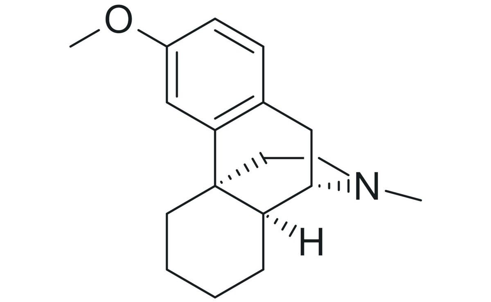

時璃風医詩🍥🌈
@hagishigure
化學骨架就是嗎啡喃。


鼠尾草～🌿
@SalviaSWC
话说DXO被译为"右啡烷"是不是误译?
从化学结构上来看，DXO是右美沙芬的O-去甲产物:右美沙芬的苯甲醚(MeO-)部分被苯酚(HO-)替换，符合DXO的英文名字(Dextrorphan)比右美沙芬(Dextromethorphan)少"Metho"的命名规则🤓
右美沙芬比DXO多个甲基，所以更“烷”，因此DXO更应被翻译为“右美沙酚”而非“右啡烷”吧() https://t.co/IAG1NmJpNT https://t.co/bSnNUqmlqX